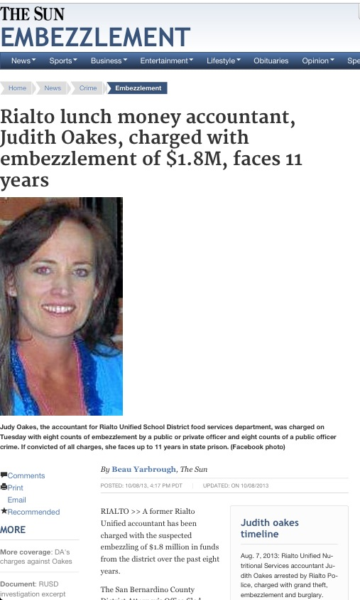
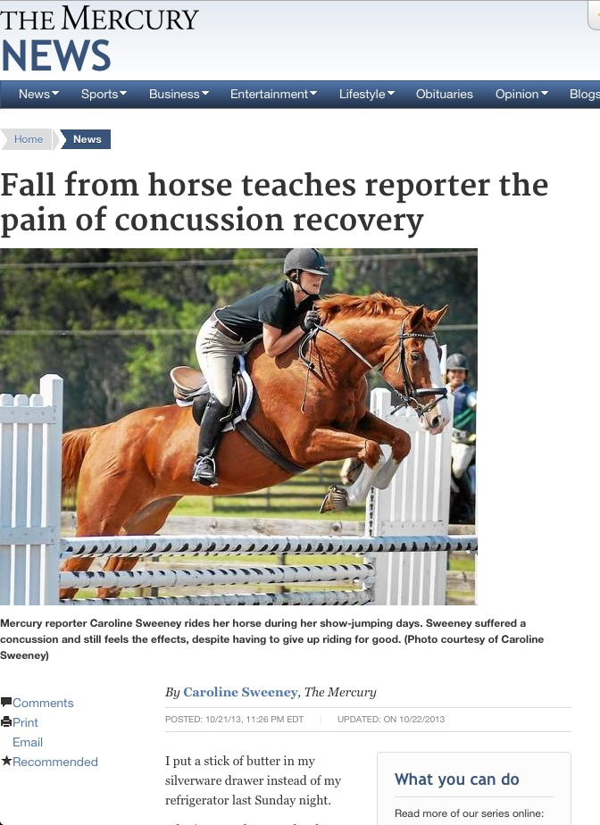

Beau Yarbrough of the San Bernardino Sun wins a DFMie for reporting on a school district official accused of embezzling $1.8 million in lunch money by stuffing cash into her bra.
Yarbrough’s win in the Los Angeles News Group was one of nine DFMies and two Tout Bout awards for excellence by Digital First Media journalists in October.
Sports reporting landed three DFMies for October coverage:
- Caroline Sweeney and Rosemarie Ross of The Mercury in Pottstown, Pa., won for their story on concussions in girls’ high school sports, including Sweeney’s first-hand account of her own concussion after falling from a horse.
- Travis Souders of the Chico Enterprise-Record won for the Northern California cluster for his live coverage of Butte College football, including live animation using an iPad app called iScorepad to provide live play-by-play coverage for a college with no radio coverage.
- Ruben Ramirez and Bill Knight of the El Paso Times won the DFMie for the Texas/New Mexico cluster for their live coverage of the announcement of the name for the new Class AAA baseball team, the El Paso Chihuahuas.
Live event coverage also landed the DFMie for the Northeast cluster, with the Daily Freeman’s Ivan Lajara, Paula Mitchell and Tania Barricklo covering the Woodstock Film Festival.
Another DFMie for live coverage went to Mike Rosenberg of the San Jose Mercury News in the Bay Area News Group for his Twitter coverage of a transit strike.
Jessica Maher of the Reporter-Herald in Loveland, Colo., continued the September run of DFMies for flood coverage. She won the DFMie for the Colorado/Utah cluster for a story on how close Loveland came to losing its water system during the flood.
A five-person team from the Denver Post won the DFMie for the metro division for Stepping Toward Hope, a project on spinal cord injuries.
Even in an odd-numbered year, local elections are important in Ohio, and the News-Herald and Morning Journal won for the Midwest cluster for their project gathering profiles, videos and replies to questions from local candidates.
The Chico Enterprise-Record was a double winner, with Roger Aylworth winning the October ToutBout for videos shot within the Tout app for his video of a rough road. Laura Oda won for the video imported into Tout for her interview with a janitor who was one of two people caring for people in an assisted living home over a weekend after the home was told to shut down.
Details of each winner are below, with tweets from winners about lessons or advice from their winning work.
Judges for October were the September winners: Nels Johnson, Sandy Mazza, Laura Amato, Michael Price, Kristina Scala, Julia Sulek, Darryl Matsuda, Cheryl Sadler, Mark Podolski, Scott Mahoney, Brandon Bowers, Jessica Onsurez, Martha Mauritson, Anda Chu, Katie Wood, Ken Lyons, Kathryn Osler, John Vahlenkamp, Matthew Jonas, Whitney Bryen, Matt Sebastian, Charlie Brennan, Mitchell Byars, Craig Young, Jessica Benes, Jenny Sparks and Frankie Frost.
I asked the winners to provide tweet-length advice or lessons from their winning efforts. Depending on when you read this, how fast they tweet with links to this post and how fast I embed them, you might read actual tweets or text of tweets to come.
Beau Yarbrough
LANG Executive Editor Michael Anastasi explained the long background that led to Yarbrough’s stories about embezzlement of school lunch money.
Since he broke the story in August, Beau Yarbrough has doggedly covered allegations that a Rialto Unified School District accountant was stealing lunch money from the district’s treasury food services department.
Allow me to back up to February for a moment. Beau had been doing a series of hard-hitting stories on a Rialto teacher who had been caught on audio verbally abusing a student. As he reported that story, he began to receive phone calls from anonymous sources about a district accountant who’d been living a lavish lifestyle. More tips kept coming, about a possible romantic relationship with the district’s superintendent.
Beau smelled possibly bad stuff here, which kept him following up constantly.
So by August, when the accountant was actually arrested, he was ready, on it, with sources and with momentum.
That foundation enabled him to be several steps ahead by October, when the DA had filed their long-awaited case.
By then, he had numerous sources and several angles on what we knew would be not just one story but several. All we needed was the DA’s filing.
Sources included the private investigator, who the district commissioned to audit the finances of the district’s food services department. And it allowed Doug Saunders to cover the law enforcement angle, working his sources for important filing dates and news. Joe Nelson also worked Rialto police sources.
We knew to start tracking her real estate records, elements of her lifestyle, her ties to the district’s superintendent Cebrun. We got the private investigator’s report two days before everybody else.
Ultimately, because of this dogged beat work, October became the month for not just a story of what happened. Rather, it became a month filled with a compelling series of stories about a scandal that went way beyond a simple DA filing. These stories spanned two weeks, culminating in a one-on-one interview with a district superintendent who was forced to deny the romantic relationship, even as a Beau obtained photos that showed the two close.
Equally impressive is that this series of stories came in the midst of criticism that we were going after the district too hard.
Beau’s work proved that wrong.
While it was broken and covered by The Sun via dogged reporting by Beau Yarbrough, it came also with big-time contributions from reporters Doug Saunders and Joe Nelson, and across LANG from Brian Charles and Rob Kuznia, who provided investigative background and analysis on the the school district chief and on how lunch money is kept safe from the very kind of crime alleged here.
Digitally, we relayed the stories to online as quickly as possible, with hyperlinks included, with vigilance from our online team who socialed them out, leading to wide readership across the LANG footprint. As you’ll see, the solid journalism allowed us to present documents online for the world to see — including an alleged letter of admission, the auditor’s damning report, photo galleries, and the photos The Sun exclusively obtained of the superintendent apparently kissing the suspect.
Judges’ comments:
Yarbrough’s reporting was what I consider to be journalism at its best. Taking a thread and pulling on it and pulling on it until the full picture is revealed. He shows a relentless drive to nail down the full story, holding those spending taxpayers’ dollars accountable, and showing an awareness of every angle to be considered.
Yarbrough’s advice: Make time to talk to every tipster. They, collectively, will tell you where to dig.
Caroline Sweeney and Rosemarie Ross
Sweeney and Ross won their DFMie for a series of stories on concussions in girls playing high school sports.
The opening story told of the rising incidence of concussions in girls’ sports, especially soccer.
The second story told how schools and coaches are responding to concussions and working to prevent them.
The third story dealt with the issue of role models, professional and Olympic athletes whose “toughness” after head injuries inspires younger athletes to try to continue playing when they should be seeking medical treatment.
In a sidebar, Sweeney told about the continuing impact she experiences from a concussion suffered in a fall from a horse.
A judge’s comment:
Caroline Sweeney and Rosemarie Ross did a beautiful job bringing an important issue from the shadows into the light by helping readers and community and education leaders realize that this isn’t just a problem for football players.
The stories were well-reported with emotional accounts from soccer players. They were partnered nicely with video interviews and twitter conversations. I especially enjoyed Caroline’s first-person account of the repercussions of her own concussion from a fall from a horse. I was equally intrigued by the effect on her daily life, as well as the difficulty in leaving behind a sport she loved.
This is the second DFMie for reporting about brain injuries in sports. Christopher James, then a sports writer at the Berkshire Eagle, won an annual DFMie for sports journalism for a story about brain injuries.
Travis Souders
Travis Souders used iScorepad to provide real-time animation of Butte College football games.
Travis Souders wins in NorCal for live sports coverage. Editor David Little explained in his nomination:
Butte College near Chico is the No. 1-ranked JC team in the state, 9-0 as of this writing, yet there are no local radio broadcasts, so we get people to “tune in” to us. Using both ScribbleLive and an iPad app that Travis found called iScorepad, we give readers live play-by-play, commentary, Tout videos, photos, a pregame interview podcast and postgame interviews. That’s a lot for one person to do — in addition to a game story and noteboook for the print edition — but Travis has excelled at this nine straight weeks.
We get people participating in the discussion from several other states (moms “watching” their sons from Florida and Louisiana, for example, and a dad from Sweden). It builds tremendous goodwill. We should all get this many “thank-yous” from all of our efforts.
Between 7,000 and 20,000 engagement minutes has been the norm each week.
To check out the iScore animation, enter 3B990D9E59 in the ID field at the link above and select a game (it’s better live, but you can still get the feel from a “replay”).
Travis both moderates the Scribble Live blog and does the iScorepad gamecast at the same time, while photographer Jason Halley adds the timely photos and video. This gets promoted extensively in print before the game and on our home page during the game. The live blog is also found via search.
It really is a phenomenal live experience, as the fans prove every week by coming back.
A judge’s comment:
I vote for Travis Souders because his Butte College game day live coverage combines enthusiasm for his coverage area with a thorough knowledge of his beat and his audience. The game replays with iScorepad animation are EXCELLENT and, combined with Travis’s blogging, pre- and post-game interviews and real-time photos, make for all-around very impressive coverage that’s as accessible to brand-new sports watchers as it is to veteran fans.
It’s inspiring to see other reporters in the company doing such good, creative, smart work!
Souders provided more than a tweet’s worth of advice about live coverage:
For the work I’ve been doing with the Butte Game Day production, the one thought that stands out most:
I moderated and answered every Scribble and Twitter comment I could, and people came back. Engagement’s a two-way street.
It took quite a bit of preparation in the early going to be ready to display everything correctly, including making the graphics, uploading interviews and more. The big thing for us, at least locally, was telling people about it — we moved our preview day, where I wrote a game preview feature, to Friday instead of Saturday, for an extra 24 hours of notice, and included an in-paper box showing what I’d be doing. Of course, I shared the ScribbleLive link on my own Twitter account and the ER’s Facebook page. Example:
Butte is 15 minutes away from a home playoff game. Check it out: http://t.co/Vqww4t7Awj
— Travis Souders (@TravisSouders) November 16, 2013
On top of that, as an “explainer,” we created a special Butte football-specific page, so that any lost or confused fans looking for the Game Day Live could have an easy directory — then, on the day of the game, I’d load a lead story to that page.
Engagement is a two-way street. Happy to win for #digitalfirst http://t.co/HqcRLkoLrU
— Travis Souders (@TravisSouders) December 3, 2013
This is the second consecutive month that live football coverage has won a DFMie. The News-Herald and Morning Journal in Ohio won for their September live coverage of high school football.
Bill Knight and Ruben Ramirez
One of Ruben Ramirez’s photos from the announcement of the naming of the El Paso Chihuahuas.
El Paso Times Editor Bob Moore explained the winning coverage of Knight and Ramirez in his nomination:
El Paso will get a new Triple-A baseball team and stadium in 2014, a development that has been both controversial and anticipated. The controversy and conversation reached new heights in October when the team owners, after much buildup, announced they were naming the team … the El Paso Chihuahuas.
The Times provided live coverage of the announcement, including a ScribbleLive chat. Sportswriter Bill Knight’s first-day story became one of the most viewed — and most commented-on — at elpasotimes.com. Photo editor Ruben Ramirez’s photos captured the announcement well.
A judge’s comment:
I thought the story itself was very well done with a nice package overall. The headline was great. I liked that there was video and photo to go along with the story and that I could play the video while I read the story. … And following up with the live coverage was great. People obviously had strong opinions about this decision so it was nice they had a reason to keep coming back to the story and a place to discuss it.
Ramirez’s advice:
Getting to venue an hour before announcement of baseball team name was made helped get crowd anticipation. Then moving inside for reaction.
Talking to crowd on hand and asking their choice made for fun comments. Then announcement made and the barking began! Chihuahuas??
Setting up a camera to record video and shooting photos was not as hard as it sounds, getting a good location from scouting really helped.
Then it was on the the team store where all those upset Fans couldn’t get enough apparel in their hands yet at first they were disappointed.
Ivan Lajara, Paula Mitchell, Tania Barricklo
The #wff2013 social media street team is up and running! pic.twitter.com/1NmMUAHi8K
— Ivan Lajara (@ivanlajara) October 5, 2013
Ivan Lajara’s advice:
Set goals. Plan. Experiment. Execute. Adjust. Bring batteries. Repeat.
— Ivan Lajara (@ivanlajara) December 3, 2013
Lajara’s nomination explains the Freeman’s coverage of the Woodstock Film Festival:
At the Daily Freeman in Kingston, N.Y. we covered the Woodstock Film Festival, using traditional reporting mixed with help with the community, tools and social media, through stories and a nonstop live blog that took place from Oct. 2 to Oct. 6
The festival and the Freeman (in print and online) were encouraging people to use the hashtag #wff2013 to feed our blog and our curated photo album.
We also had a Rebelmouse page that compiled the rest of the web.
With Tout, we produced 34 video highlights and interviews at the scene with stars, directors, and revelers.
On Oct. 5, the Freeman’s Community Media Lab met the film festival’s Youth Initiative and Google Glass (we even had a Glass photo on the front page!
The @googleglass pic on front page: @WAMCRoundtable Joe Donohue, Paul Rudd, Ilene Marder and #WFF2013‘s @meira4 pic.twitter.com/UdHxIaYB7L
— Ivan Lajara (@ivanlajara) October 4, 2013
We partnered with the festival, and on top of the partnership, we used their social media team to feed our blog.
On the side, we played with Zeega and and we live-giffed Paul Rudd.
Paul Rudd, Andy Garcia and Peter Bogdanovich were popular topics, as expected. And even though our home coverage was just done by Paula, Tania and Ivan, the aggregate with the community made it a 24/7 affair. The awards ceremony was live tweeted (with Glass photos! And bad lighting!) and residual traffic carried into the a couple of days after the festival was over.
Ivan’s wearing of Google Glass became a bit of a thing even with the people he was interviewing. It was an exhausting and rewarding process.
The key? Planning, an informal collaborative partnership with the festival, dedication — and a good connection and battery life.
We are proud that we accomplished so much with our little band of three, some creative use of tools, and collaboration.
A judge’s comment:
I was really impressed with the volume of work produced by a small staff. They found creative ways, by using all the tools available, to expand their coverage and create a great deal of various content for readers. To me, this type of event is absolutely perfect for something like Tout and they made great use of it by posting many videos and interviews.
Freeman’s advice:
Think audience interest when writing & Touting. Stay dedicated (even when exhausted). If you meet Paul Rudd, don't ask him about his genes.
— Paula Ann Mitchell (@anchoratfreeman) December 4, 2013
Fittingly, the Freeman team celebrated its win using Zeega.
Mike Rosenberg
Bus lines at Transbay Terminal in SF already long (via @nikkilynn019) pic.twitter.com/NO5qcFE0pC
— Mike Rosenberg (@RosenbergMerc) October 18, 2013
Rosenberg wins for his tireless Twitter coverage of the Bay Area Rapid Transit strike and negotiations leading up to the strike. Randall Keith’s nomination explains:
Our coverage of the BART strike gave Mike Rosenberg the opportunity to show his mastery of social media. Mike’s twitter feed (@RosenbergMerc) on the negotiations was must-reading for those wondering how the negotiations were going and when the trains would run again. He regularly beat all other media on the key turns in the story. Mike also gave his followers lots of wonderful bonus material; each time a BART employee spoke to the press about how management wouldn’t pay them what they were worth, Mike posted how much they really were paid (the union’s chief spokeswoman is a station agent who makes more than $100K annually).
That chief negotiator, by the way? Being paid $399,000 as a contractor. Details if you want to see him: http://t.co/JzNcFQdPCZ #BARTstrike
— Mike Rosenberg (@RosenbergMerc) October 15, 2013
It’s official: #BARTstrike is over!!!! It’s all over!!!!!!
— Mike Rosenberg (@RosenbergMerc) October 22, 2013
We’ve embedded a few Rosenberg tweets here, but you also can check out a Storify that shows a wider sampling of his #BARTstrike tweets or the Merc’s live blog.
Rosenberg’s response to winning the DFMie:
I’ve said the BART strike was a career-altering story for me from a Twitter standpoint – not only did my follower count double to more than 2,000 in the 3 months that included the two strikes but I really learned how to use Twitter beyond the whole “linking to your stories” routine. …
That story really did remind me of one of the main reasons why I got into this business in the first place – people really relied on us. Even though there were a lot of long days (and late nights) covering this thing, I fed off everyone’s insatiable desire for information. I knew there were a lot of desperate people out there when I’d go an hour without tweeting and people would write me asking what the latest is!
A judge’s comment:
Scanning through Mike’s Twitter feed, I was able to catch up with BART negotiation issues in one location– a practice extremely useful to those who are continuously looking to social media sites for news rather than searching a news organization’s website. He also provided the public, including those affected by the halt of train operations, with valuable information immediately (i.e. BART purchasing additional cars after denying “full labor deal” linking to the announcement on BART’s web page).
Jessica Maher
The Reporter-Herald’s breaking news coverage of September flooding won a DFMie. But flood coverage is a continuing story and Maher wins an October DFMie for a two-part series that told how close Loveland came to losing its water system: The 72 hours that saved Loveland’s water and Moving the river.
Editor Jeff Stahla’s nomination explains:
We had heard on the scanner during the flood bits and pieces of the drama unfolding at the treatment plant, but it was not until after the emergency was over that various sources within the city gave us access to unseen footage and interviews with the people on the ground as the Big Thompson River destroyed two of three water supply lines to the city of 70,000 and took aim at the third.
Jessica Maher used great storytelling along with visuals from Photo Editor Jenny Sparks to create a dramatic account of events in the middle of the flood.
A judge’s comment:
The way she deftly frames the story and captures the drama of the situation without feeling melodramatic — while giving enough technical information to explain what happened without getting bogged down in it — kept me riveted until the end. I suspect it did for many readers, as well, which is something rare in today’s short-attention-span world.
Maher’s advice:
A flood story doesn’t have to be about zip line rescues to show devastation and courageous work.
Also learned: patience. It took weeks to see the full scope but the story could reflect a complete picture.
Denver Post
Reporter Michael Booth, photojournalists Craig Walker, AAron Ontiveroz and R.J. Sangosti and artist Severiano Galvan win the metro DFMie for Stepping Toward Hope. The nomination from Linda Shapley explains:
“Stepping Toward Hope” chronicled in four parts the efforts of patients suffering spinal-cord injuries to take advantage of new science and locomotor therapy that may allow them to walk again. Intense struggles, aching despair and remarkable effort are all part of their grueling stories, which were explored by health reporter Michael Booth and photographers Craig Walker, AAron Ontiveroz and R.J. Sangosti. Artist Severiano Galvan also provided graphics that helped explain what we know about paralysis and what has been learned.
Through compelling text, images and videos, the team was able to change what most people thought about paralysis. “Will I walk again?” has become a question that has more than one answer.
Booth’s explanation:
Telling new and true stories in every possible form, that was the goal and the joy for all in this project.
Walker’s:
We met some wonderful people. I did 3 picture stories -so my challenge was balancing the time I spent w/ James, Mackenzie & Kyle.
Another challenge was getting past the therapy and showing who these people are- despite their injuries.
A judge’s comments:
The series connected me with the subjects and caused me to hurt for them and root for them.
But this was more than just good storytelling. It was informative. I learned about progress in spinal cord rehabilitation that I had not imagined possible. I lingered on the interactive graphics. I was reminded of what I already knew the spine and learned what I had not known about the spine and the effects of injuries to it.
The videos put me in the room with the subjects as they pushed through their therapy. It was excruciating to watch.
News-Herald and Morning Journal
Voters in DFM communities in Ohio got plenty of information about local races to help them make their choices in November’s elections.
The nomination from Editor Tricia Ambrose explained:
In September, we hosted three open houses (two at the News-Herald, one at the Morning Journal) inviting candidates to come and meet staffers, get a photo taken, record a video, return the completed questionnaire we had mailed them and get information on advertising options.
We then created candidate profiles for the 307 local candidates who returned the questionnaires. Profiles were gathered on a blog (which has garnered 10,000 views) and each featured a brief intro to the candidate, the candidate’s photo, 45-second video pitch, actual questionnaire uploaded to Scribd and link to the staff-written race preview story. Then we linked from their name in the preview story to that bio.
Each of those stories was then posted in a county-specific blog post that was posted as a Hot Topic on the news and opinion pages.
A judge’s comment:
I am sure your readers are very interested in local elections and the candidates and this coverage is important to them. … I liked how the county candidates and issues were listed and the reader could simply click on their township to find their candidates and issues that will effect them.
Advice from News-Herald editors:
From Engagement Editor Cheryl Sadler:
Develop a plan for how the content will be published so the candidates understand how it will be used.
Involve as much of your staff as possible in implementation, so one staffer doesn’t get bogged down.
Make sure profiles are published, linked to preview stories ASAP. Don’t keep candidates or voters waiting.
From Editor Tricia Ambrose:
Be sure to set deadline for candidates to return info & don’t allow resubmissions.
Have plenty of staff at open houses so there’s no logjam of folks awaiting photo, video or ad info.
ToutBout winner Roger Aylworth
Aylworth wins for the video shot in the Tout app for his shot of a rough road. Here’s what a judge said:
Good use of Tout to illustrate how bad this road really is to drive. The video with its first-person view gives the watcher a front seat to how rough this road is to travel over.
ToutBout winner Laura Oda
Oda wins for the best video shot and edited outside the app and imported into Tout. “I got all choked up watching it,” a judge said.